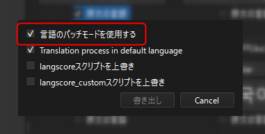

言語パッチ機能¶
言語パッチモードは、翻訳データの管理方式を従来の翻訳CSVファイルから、「言語ごとの個別CSVファイル」に変更できる機能です。
言語パッチモードの最大の特徴は、あらかじめ許可されている言語であれば、任意の言語を個別に追加可能である という点です。
これにより、特定の言語だけの翻訳CSVを配布することが可能となります。
有効にする¶
言語パッチモードを有効にするには、プラグインの更新または翻訳データを書き出す際に、以下のオプションにチェックを入れてください。
CSVの配置場所¶
従来のCSVの配置場所:
Data/Translate以下に全ての翻訳CSVを配置。
言語パッチモード有効時のCSV配置場所:
Data/Translate/(言語コード)フォルダに各言語のCSVを配置。MV/MZバージョンの場合は
data/translate/(言語コード)フォルダに配置。
この (言語コード) フォルダを「言語フォルダ」と呼称します。
警告
言語パッチモードはMV/MZのWebブラウザ実行時では使用できません。従来の方法を使用して下さい。